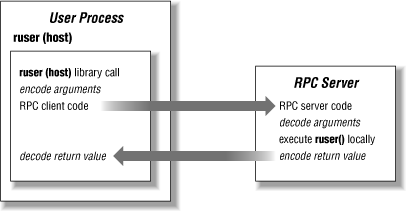

creation and lifetime of network
connections and the format of data sent over these connections.
Sessions may be built on top of any supported transport protocol
-- login sessions use TCP, while services that broadcast
information about the local host use UDP. The session protocol used
by NFS and NIS is the Remote
1.5.1. The client-server model
RPC provides a mechanism
for one host to make a procedure call that appears to be part of the
local process but is really executed on another machine on the
network. Typically, the host on which the procedure call is executed
has resources that are not available on the calling host. This
distribution of computing services imposes a client/server
relationship on the two hosts: the host owning the resource is a
server for that resource, and the calling host becomes a client of
the server when it needs access to the resource. The resource might
be a centralized configuration file (NIS) or a shared filesystem
(NFS).
Instead of executing the procedure on the local host, the RPC system
bundles up the arguments passed to the procedure into a network
datagram. The exact bundling method is determined by the presentation
layer, described in the next section. The RPC client creates a
session by locating the appropriate server and sending the datagram
to a process on the server that can execute the RPC; see
Figure 1-1. On the server, the arguments are unpacked,
the server executes the result, packages the result (if any), and
sends it back to the client. Back on the client side, the reply is
converted into a return value for the procedure call, and the user
application is re-entered as if a local procedure call had completed.
This is the end of the "session," as defined in the ISO
model.

Figure 1-1. Remote procedure call execution
RPC services may be built on either TCP or UDP transports,
although most are UDP-oriented because
they are centered around short-lived requests. Using UDP also forces
the RPC call to contain enough context information for its execution
independent of any other RPC requests, since UDP packets may arrive
in any order, if at all.
When an RPC call is made, the client may specify a timeout period in
which the call must complete. If the server is overloaded or has
crashed, or if the request is lost in transit to the server, the
remote call may not be executed before the timeout period expires.
The action taken upon an RPC timeout varies by application; some
resend the RPC call, while others may look for another server.
Detailed mechanics of making an RPC call can be found in
Chapter 13, "Network Diagnostic and Administrative Tools".
1.5.2. External data representation
At first look, the data presentation layer seems
like overkill. Data is data, and if the client and server processes
were written to the same specification, they should agree on the
format of the data -- so why bother with a presentation
protocol? While a presentation layer may not be needed in a purely
homogeneous network, it is required in a heterogeneous network to
unify differences in data representation. These differences are
outlined in the following list:
- Data byte ordering
- Does the most significant byte of an integer go
in the odd- or even-numbered byte?
- Compiler behavior
- Do odd-sized quantities get padded out to
even-byte boundaries? How are unions
handled?
- Floating point numbers
- What standard is used for encoding floating point
numbers?
- Arrays and strings
- How do you transmit variable-sized objects,
such as arrays and strings?
Again, a presentation protocol would not be necessary if datagrams
consisted only of byte-oriented data. However, applications that use
RPC expect a system call-like interface, including support for
structures and data types more complex than byte streams. The
presentation layer provides services for encoding and decoding
argument buffers that may then be passed down to RPC for transmission
to the client or server.
The External Data Representation (XDR)
protocol was
developed by Sun Microsystems
and is used by NIS and NFS at the presentation layer. XDR is built on
the notion of an immutable network byte ordering, called
the
canonical form.
It isn't really important what the canonical form is --
your system may or may not use the same byte ordering and structure
packing conventions. The canonical form simply allows network hosts
to exchange structured data (as opposed to streams of bytes)
independently of any peculiarities of a particular machine. All data
structures are converted into the network byte ordering and padded
appropriately.
The rule of XDR is "sender makes local canonical; receiver
makes canonical local." Any data that goes over the network is
in canonical form.
[3] A host sending data on the network
converts it to canonical form, and the host that receives the data
converts it back into its local representation. A different way to
implement the presentation layer might be "receiver makes
local." In this case, the sender does nothing to the local
data, and the receiver must deduce the packing and encoding technique
and convert it into the local equivalent. While this scheme may send
less data over the network -- since it is not subject to
additional padding -- it places the burden of incorporating a
new hardware architecture on the receiving side, rather than on the
new machine. This doesn't seem like a major distinction, but
consider having to change all existing, fielded software to handle
the new machine's structure-packing conventions. It's
usually worth the overhead of converting to and from canonical form
to ensure that all new machines will be able to "plug in"
to the network without any software changes.
The XDR and RPC layers complete the foundation necessary for a
client/server distributed computing relationship. NFS and NIS are
client/server applications, which means they sit at the top layer of
the protocol stack and use the XDR and RPC services. To complete this
introduction to network services, we'll take a look at the two
mechanisms used to start and maintain servers for various
network services.
1.5.3. Internet and RPC server configuration
The XDR and RPC services are
useful for applications that need to
exchange data structures over the network. Each new RPC request
contains all required information in its XDR-encoded arguments, just
as a local procedure call gets its inputs from passed-in
arguments.
RPC services are usually
connectionless services
because
RPC requests do not require the creation of a long-lived network
connection between the client and server. The client communicates
with the server to send its request and receive a reply, but there is
no connection or environment for the communication.
There
are many other network
services,
such
as
telnet and
ftp, that are
commonly referred to as the Internet or ARPA services. They are part
of the original suite of utilities designed for use on the Internet.
Internet services are generally based on the TCP protocol and are
connection-oriented -- the service client
establishes a connection to a server, and data is then exchanged in
the form of a well-ordered byte stream. There is no need for RPC or
XDR services, since the data is byte-oriented, and the service
defines its own protocols for handling the data stream. The
telnet service, for example, has
its own protocol for
querying the server about end-of-line, terminal type, and flow
control conventions.
Note that RPC services are not required to be connectionless. RPC can
be run over TCP, in a connection-oriented fashion. The TCP transport
protocol
may be used with RPC services whenever a
large amount of data needs to be transferred. NIS, for example, uses
UDP (in connectionless mode) for most of its operations, but switches
to TCP whenever it needs to transfer an entire database from one
machine to another. NFS supports either TCP or UDP for all its
operations.
Most Internet services are managed by a
super-daemon called
inetd that accepts requests for connections to
servers and starts instances of those servers on an as-needed basis.
Rather than having many server processes,
or
daemons, running on each host,
inetd starts them as requests arrive. Clients
contact the
inetd daemon on well-known port
numbers for each service. These port numbers are published in the
/etc/services file.
inetd sets up a one-to-one relationship between
service clients and server-side daemons. Every
rlogin shell, for example,
has
a client side
rlogin process (that calls
inetd upon invocation) and a server-side
in.rlogind daemon that was started by
inetd. In this regard,
inetd and the services it supports are
multi-threaded: they can service multiple
clients at the same time, creating a new separate connection (and
state information) for each client. A new server instance, or thread,
is initiated by each request for that service, but a single daemon
handles all incoming requests at once.
Only traffic specific to a single session moves over the connection
between a client and its server. When the client is done with the
service, it asks the server to terminate its connection, and the
server daemon cleans up and exits. If the server prematurely ends the
connection due to a crash, for example, the client drops its end of
the connection as well.
Some RPC services can't afford the
overhead
of using
inetd. The
standard
inetdbased services, like
telnet, tend to be used for a long time, so the
cost of talking to
inetd and having it start a
new server process is spread out over the lifetime of the connection.
Many RPC calls are short in duration, lasting at most the time
required to perform a disk operation.
RPC servers are generally started during the boot process and run as
long as the machine is up. While the time required to start a new
server process may be small compared to the time a remote login or
rsh session exists,
this overhead is simply too large for
efficient RPC operation. As a result, RPC servers typically have one
server process for the RPC service, and it executes remote requests
for all clients in the same process. Some RPC servers are
single-threaded: they execute requests one at a time. To achieve
better performance, some RPC servers are multi-threaded: they have
multiple threads of execution within the same process, sharing the
same address space. There may be many clients of the RPC server, but
their requests intermingle in the RPC server queue and are processed
in the order in which server threads are dispatched to deal with the
requests.
Instead of using pre-assigned ports and a super-server, RPC servers
are designated by service number. The file
/etc/rpc contains a list of RPC servers and
their program numbers. Each program may contain many procedures. The
NFS program, for example, contains more than a dozen procedures, one
for each filesystem operation such as "read block,"
"write block," "create file," "make
symbolic link," and so on. RPC services still must use TCP/UDP
port numbers to fit the underlying protocols, so the mapping of RPC
program numbers to port numbers is handled by
the
portmapper daemon
(
portmap on some systems,
rpcbind on others).
When an RPC server initializes, it usually
registers
its service with the portmapper. The RPC server tells the portmapper
which ports it will listen on for incoming requests, rather than
having the portmapper listen for it, in
inetd
fashion. An RPC client contacts the portmapper daemon on the server
to determine the port number used by the RPC server, or it may ask
the portmapper to call the server indirectly on its behalf. In either
case, the first RPC call from a client to a server must be made with
the portmapper running. If the portmapper dies, clients will be
unable to locate RPC daemons services on the server. A server without
a running portmapper effectively stops serving NIS, NFS, and other
RPC-based applications.
We'll come back to RPC mechanics and debugging techniques in
later chapters. For now, this introduction to the configuration and
use of RPC services suffices as a foundation for explaining the NFS
and NIS applications built on top of them.
1.5.3.1. Socket RPC and Transport Independent RPC
RPC was originally designed to work over
sockets, a programing
interface for network communication
introduced in the 1980s by the University of California in its 4.1c
BSD version of Unix. Solaris 2.0 introduced Transport Independent RPC
(TI-RPC). The motivation for TI-RPC was that it appeared that OSI
networking
would eventually supplant TCP/IP-based
networking, and so a transport independent interface would make it
easier to transition RPC applications was needed. While OSI
networking did not take over, TI-RPC is still used in Solaris. TI-RPC
introduces an additional configuration file,
/etc/netconfig, which defines each transport
that RPC services can listen for requests over. In addition to TCP
and UDP, the
/etc/netconfig file lists
connectionless and connection-oriented loopback transports for RPC
services that don't need to provide service outside the host.
In Solaris 8, the
/etc/netconfig file will
also
let you
specify
services over TCP and UDP on IPv6
network
interfaces.